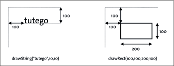

14.9 Zeichnen von grafischen Primitiven
Ist das Fenster geöffnet, lässt sich etwas in dem Fenster zeichnen. Da sich die Wege zwischen AWT und Swing trennen, wollen wir mit dem AWT beginnen und dann alle weiteren Beispiele mit Swing bestreiten.
14.9.1 Die paint()-Methode für das AWT-Frame
Als einleitendes Beispiel soll uns genügen, einen Text zu platzieren. Dafür überschreiben wir die Methode paint() der Klasse Frame und setzen dort alles hinein, was gezeichnet werden soll, etwa Linien, Texte oder gefüllte Polygone. Der gewünschte Inhalt wird immer dann gezeichnet, wenn das Fenster neu aufgebaut wird oder wir von außen repaint() aufrufen, denn genau in diesem Fall wird das Grafiksystem paint() aufrufen und das Zeichnen anstoßen:
Listing 14.15: com/tutego/insel/ui/graphics/Bee.java
package com.tutego.insel.ui.graphics;
import java.awt.*;
import java.awt.event.*;
public class Bee extends Frame
{
private static final long serialVersionUID = –3800165321162121122L;
public Bee()
{
setSize( 500, 100 );
addWindowListener( new WindowAdapter() {
@Override
public void windowClosing ( WindowEvent e ) { System.exit( 0 ); }
} );
}
@Override
public void paint( Graphics g )
{
g.drawString( "\"Maja, wo bist du?\" (Mittermeier)", 120, 60 );
}
public static void main( String[] args )
{
new Bee().setVisible( true );
}
}
Abbildung 14.28: Ein Fenster mit gezeichnetem Inhalt
Der Grafikkontext Graphics
Das Grafiksystem ruft von unserem Programm die paint()-Methode auf und übergibt ein Objekt vom Typ Graphics – beziehungsweise Graphics2D, wie wir später sehen werden. Dieser Grafikkontext bietet verschiedene Methoden zum Setzen von Zeichenzuständen und zum Zeichnen selbst, etwa von Linien, Kreisen, Ovalen, Rechtecken, Zeichenfolgen oder Bildern. Dies funktioniert auch dann, wenn die Zeichenfläche nicht direkt sichtbar ist, wie bei Hintergrundgrafiken.
Das Graphics-Objekt führt Buch über mehrere Dinge:
- die Komponente, auf der gezeichnet wird (hier ist das erst einmal das rohe Fenster)
- Koordinaten des Bildbereichs und des Clipping-Bereichs. Die Zeichenoperationen außerhalb des Clipping-Bereichs werden nicht angezeigt. Daher wird ein Clipping-Bereich auch Beschnitt-Bereich genannt.
- den aktuellen Zeichensatz (java.awt.Font) und die aktuelle Farbe (java.awt.Color)
- die Pixeloperation (Xor[202](Zur Bewegung des Grafik-Cursors wird gern eine Xor-Operation eingesetzt. Obwohl dies absolut einfach erscheint, ist die Realisierungsidee patentiert.) oder Paint)
- die Translation – eine Verschiebung vom Nullpunkt
Wir können nur in der paint()-Methode auf das Graphics-Objekt zugreifen. Diese wird immer dann aufgerufen, wenn die Komponente neu gezeichnet werden muss. Dies nutzen wir, um einen Text zu schreiben. Dem Bee-Beispiel ist zu entnehmen, dass die Methode drawString(String text, int x, int y) einen Text in den Zeichenbereich des Grafikkontexts schreibt. Im Folgenden werden wir noch weitere Methoden kennenlernen.
| Hinweis |
|
Etwas ungewöhnlich ist die Tatsache, dass der Nullpunkt nicht oben links in den sichtbaren Bereich fällt, sondern dass die Titelleiste den Nullpunkt überdeckt. Um an die Höhe der Titelleiste zu kommen und die Zeichenoperationen so zu verschieben, dass sie in den sichtbaren Bereich fallen, wird ein java.awt.Insets-Objekt benötigt. Ist f ein Frame-Objekt, liefert f.getInsets().top die Höhe der Titelleiste. |
14.9.2 Die ereignisorientierte Programmierung ändert Fensterinhalte
Der Einstieg in die Welt der Grafikprogrammierung mag etwas seltsam erscheinen, weil in der prozeduralen, nicht ereignisgesteuerten Welt die Programmierung anders verlief. Es gab einige Funktionen, mit denen sich direkt sichtbar auf dem Bildschirm operieren ließ. Ein Beispiel[203](Commodore 128 System Guide, Commodore Business Machines, Inc. 1985, online zugänglich unter http://members.tripod.com/~rvbelzen/c128sg/toc.htm.) aus der C128-Zeit:
10 COLOR 0,1 :REM SELECT BACKGROUND COLOR
20 COLOR 1,3 :REM SELECT FOREGROUND COLOR
30 COLOR 4,1 :REM SELECT BORDER COLOR
40 GRAPHIC 1,1 :REM SELECT BIT MAP MODE
60 CIRCLE 1,160,100,40,40 :REM DRAW A CIRCLE
70 COLOR 1,6 :REM CHANGE FOREGROUND COLOR
80 BOX 1,20,60,100,140,0,1 :REM DRAW A BLOCK
90 COLOR 1,9 :REM CHANGE FOREGROUND COLOR
100 BOX 1,220,62,300,140,0,0 :REM DRAW A BOX
110 COLOR 1,9 :REM CHANGE FOREGROUND COLOR
120 DRAW 1,20,180 TO 300,180 :REM DRAW A LINE
130 DRAW 1,250,0 TO 30,0 TO 40,40 TO 250,0 :REM DRAW A TRIANGLE
140 COLOR 1,15 :REM CHANGE FOREGROUND COLOR
150 DRAW 1,160,160 :REM DRAW A POINT
160 PAINT 1,150,97 :REM PAINT IN CIRCLE
170 COLOR 1,5 :REM CHANGE FOREGROUND COLOR
180 PAINT 1,50,25 :REM PAINT IN TRIANGLE
190 COLOR 1,7 :REM CHANGE FOREGROUND COLOR
200 PAINT 1,225,125 :REM PAINT IN EMPTY BOX
210 COLOR 1,11 :REM CHANGE FOREGROUND COLOR
220 CHAR 1,11,24,"GRAPHIC EXAMPLE" :REM DISPLAY TEXT
230 FOR I=1 TO 5000:NEXT:GRAPHIC 0,1:COLOR 1,2
Diese Vorgehensweise funktioniert in Java (und auch in vielen modernen Systemen) nicht mehr. Auch mit Objektorientierung hat sie nicht viel zu tun!
In Java führt ein Repaint-Ereignis zum Aufruf der paint()-Methode. Dieses Ereignis kann ausgelöst werden, wenn der Bildschirm zum ersten Mal gezeichnet wird, aber auch, wenn Teile des Bildschirms verdeckt werden. Falls das Repaint-Ereignis eintritt, springt das Java-System in die paint()-Methode, in der der Bildschirm aufgebaut werden kann. Nur dort finden die Zeichenoperationen statt. Wenn wir nun selbst etwas zeichnen wollen, kann das nur in der paint()-Methode geschehen, beziehungsweise in Methoden, die von paint() aufgerufen werden. Wenn wir aber selbst etwas zeichnen wollen, wie lässt sich paint() dann parametrisieren?
Um mit diesem Problem umzugehen, müssen wir der paint()-Methode Informationen mitgeben. Diese Informationen kann paint() nur aus den Objektattributen beziehen. Daher implementieren wir eine Unterklasse einer Komponente, die eine paint()-Methode besitzt. Anschließend können wir Objektzustände ändern, sodass paint() neue Werte bekommt und somit gewünschte Inhalte zeichnen kann.
14.9.3 Zeichnen von Inhalten auf ein JFrame
Wenn Swing eine Komponente zeichnet, ruft es automatisch die Methode paint() auf. Um eine Grafik selbst in ein Fenster zu zeichnen, ließe sich von JFrame eine Unterklasse bilden und paint() überschreiben – das ist jedoch nicht der übliche Weg.
Stattdessen wählen wir einen anderen Ansatz, der sogar unter AWT eine gute Lösung ist. Wir bilden eine eigene Komponente, eine Unterklasse von JPanel (unter AWT Panel, was wir aber nicht mehr weiter verfolgen wollen), und setzen diese auf das Fenster. Wird das Fenster neu gezeichnet, gibt das Grafiksystem den Zeichenauftrag an die Kinder weiter, also an unser spezielles JPanel, und ruft die überschriebene paint()-Methode auf. Allerdings überschreiben eigene Unterklassen von Swing-Komponenten im Regelfall nicht paint(), sondern paintComponent(). Das liegt daran, dass Swing in paint() zum Beispiel noch Rahmen zeichnet und sich um eine Pufferung des Bildschirminhalts zur Optimierung kümmert. So ruft paint() die drei Methoden paintComponent(), paintBorder() und paintChildren() auf, und bei einer Neudarstellung kümmert sich ein RepaintManager um eine zügige Darstellung mithilfe der gepufferten Inhalte, was bei normalen Swing-Interaktionskomponenten wie Schaltflächen wichtig ist.
Damit ist die Darstellung von Inhalten in einem JFrame einfach. Wir importieren drei Klassen, JPanel und JFrame aus javax.swing sowie Graphics aus java.awt. Dann bilden wir eine Unterklasse von JPanel und überschreiben paintComponent():
Listing 14.16: com/tutego/insel/ui/graphics/DrawFirstLine.java, Teil 1
package com.tutego.insel.ui.graphics;
import java.awt.Graphics;
import javax.swing.*;
class DrawPanel extends JPanel
{
@Override
protected void paintComponent( Graphics g )
{
super.paintComponent( g );
g.drawLine( 10, 10, 100, 50 );
}
}
Die Methode paintComponent() besitzt in der Oberklasse die Sichtbarkeit protected, was wir beibehalten sollten; die Methode wird nicht von uns von anderer Stelle aufgerufen, daher muss eine Unterklasse die Sichtbarkeit nicht zu public erweitern. Der Aufruf von super.paintComponent() ist immer dann angebracht, wenn die Oberklasse ihre Inhalte zeichnen soll. Bei vollständig eigenem Inhalt ist das nicht notwendig.
Der letzte Schritt ist ein Testprogramm, das ein Exemplar des spezialisierten JPanel bildet und auf den JFrame setzt:
Listing 14.17: com/tutego/insel/ui/graphics/DrawFirstLine.java, Teil 2
public class DrawFirstLine
{
public static void main( String[] args )
{
JFrame f = new JFrame();
f.setDefaultCloseOperation( JFrame.EXIT_ON_CLOSE );
f.setSize( 100, 100 );
f.add( new DrawPanel() );
f.setVisible( true );
}
}
Die Lösung mit dem JPanel muss nicht die Höhe der Titelleiste berücksichtigen; die Komponente JPanel, die auf das Fenster gesetzt wird, befindet sich korrekt unterhalb der Titelleiste, und die Zeichenfläche liegt nicht verdeckt unter der Titelleiste.
14.9.4 Linien
Bei Linien müssen wir uns von der Vorstellung trennen, die uns die analytische Geometrie nahelegt. Laut Euklid ist dort eine Linie als kürzeste Verbindung zwischen zwei Punkten definiert. Da Linien eindimensional sind, besitzen sie eine Länge aus unendlich vielen Punkten, doch keine wirkliche Breite. Auf dem Bildschirm besteht eine Linie nur aus endlich vielen Punkten, und wenn eine Linie gezeichnet wird, werden Pixel gesetzt, die nahe an der wirklichen Linie sind. Die Punkte müssen passend in ein Raster gesetzt werden, und so kommt es vor, dass die Linie in Stücke zerbrochen wird. Dieses Problem gibt es bei allen grafischen Operationen, da von Fließkommawerten eine Abbildung auf Ganzzahlen, in unserem Fall absolute Koordinaten des Bildschirms, durchgeführt werden muss. Eine bessere Darstellung der Linien und Kurven ist durch Antialiasing zu erreichen. Dies ist eine Art Weichzeichnung mit nicht nur einer Farbe, sondern mit Abstufungen, sodass die Qualität auf dem Bildschirm wesentlich besser ist. Auch bei Zeichensätzen ist dadurch eine merkliche Verbesserung der Lesbarkeit auf dem Bildschirm zu erzielen.
Die Methode drawLine() wurde schon im ersten Beispiel vorgestellt.
abstract class java.awt.Graphics |
- abstract void drawLine(int x1, int y1, int x2, int y2)
Zeichnet eine Linie zwischen den Koordinaten (x1,y1) und (x2,y2) in der Vordergrundfarbe.
| Beispiel |
|
Setze einen Punkt an die Stelle (x,y): g.drawLine( x, y, x, y ); |
14.9.5 Rechtecke
Als Nächstes werfen wir einen Blick auf die Methoden, die uns Rechtecke zeichnen lassen. Die Rückgabe ist – wie auch bei den anderen Zeichenmethoden – immer void. Es ist nicht so, dass die Methoden durch einen Wahrheitswert mitteilen, ob ein tatsächlicher Zeichenbereich gefüllt werden konnte. Liegen die Koordinaten des zu zeichnenden Objekts nicht im Sichtfenster, geschieht einfach gar nichts. Die Zeichenmethode ist nicht in der Lage, dies dem Aufrufer in irgendeiner Form mitzuteilen.
abstract class java.awt.Graphics |
- void drawRect(int x, int y, int width, int height)
Zeichnet ein Rechteck in der Vordergrundfarbe. Das Rechteck ist width + 1 Pixel breit und height + 1 Pixel hoch. - void abstract fillRect(int x, int y, int width, int height)
Zeichnet ein gefülltes Rechteck in der Vordergrundfarbe. Das Rechteck ist width Pixel breit und height Pixel hoch. - void abstract drawRoundRect(int x, y, int width, height, int arcWidth, arcHeight)
Zeichnet ein abgerundetes Rechteck in der Vordergrundfarbe. Das Rechteck ist width + 1 Pixel breit und height + 1 Pixel hoch. arcWidth gibt den horizontalen und arcHeight den vertikalen Durchmesser der Kreisbögen der Ränder an. - void abstract fillRoundRect(int x, y, int width, height,int arcWidth, arcHeight)
Zeichnet wie drawRoundRect(), nur gefüllt. - void draw3DRect(int x, int y, int width, int height, boolean raised)
Zeichnet ein dreidimensional angedeutetes Rechteck in der Vordergrundfarbe. Der Parameter raised gibt an, ob das Rechteck optisch erhöht oder vertieft wirken soll. Die Farben für den Effekt werden aus den Vordergrundfarben gewonnen. - void fill3DRect(int x, int y, int width, int height, boolean raised)
Zeichnet wie draw3Drect(), nur gefüllt.
| Hinweis |
|
Die Breiten der Rechtecke bei den Methoden drawRect() und fillRect() unterscheiden sich. drawRect(0, 0, 10, 10) zeichnet ein 11 × 11 Pixel breites Rechteck, und fillRect(0, 0, 10, 10) zeichnet ein 10 × 10 Pixel breites Rechteck. |
Abbildung 14.29: Beispiel für drawRoundRect()
14.9.6 Zeichenfolgen schreiben
Die Methode drawString() bringt eine Unicode-Zeichenkette mit sogenannten Glyphen, das sind konkrete grafische Darstellungen eines Zeichens, auf den Bildschirm – die Darstellung von Zeichen übernimmt in Java der Font-Renderer.
Abbildung 14.30: Koordinatenangaben von drawString() und drawRect() im Vergleich
Die Parameter von drawString() beschreiben die zu schreibende Zeichenkette sowie die x- und y-Koordinaten. Die Koordinaten bestimmen die Position der Schriftlinie – auch Grundlinie genannt (engl. baseline) –, auf der die Buchstaben stehen.
abstract class java.awt.Graphics |
- abstract void drawString(String s, int x, int y)
Schreibt einen String in der aktuellen Farbe und dem aktuellen Zeichensatz. - abstract void drawString(AttributedCharacterIterator iterator, int x, int y)
Schreibt einen String, der durch den Attribut-Iterator gegeben ist. - abstract void drawChars(char[] data, int offset, int length, int x, int y)
- abstract void drawBytes(byte[] data, int offset, int length, int x, int y)
Schreibt die Zeichenkette und bezieht die Daten aus einem Char- bzw. Byte-Feld.
| Hinweis |
|
Die Klasse TextLayout bietet weitergehende Möglichkeiten, etwa Farbhervorhebung, Cursor-Funktionalität oder über TextHitInfo Tests, welches Zeichen sich an welcher Koordinate befindet, was bei Mausklicks nützlich ist. Ein draw() vom TextLayout bringt den Textbaustein auf den Schirm. Die Dokumentation listet etwas Quellcode zur Verdeutlichung auf. |
14.9.7 Die Font-Klasse
Die Methode drawString() verwendet immer den aktuellen Zeichensatz. Um diesen zu ändern, benutzen wir auf dem aktuellen Graphics-Objekt die Methode setFont(). Der Übergabeparameter ist ein Font-Objekt, das wir von woanders erfragen oder vorher erzeugen müssen.
Abbildung 14.31: UML-Diagramm der Klasse Font
class java.awt.Font |
- Font(String name, int style, int size)
Erzeugt ein Font-Objekt mit einem gegebenen Namen, einem gegebenen Stil und einer gegebenen Größe.
Für den Stil deklariert die Font-Klasse drei symbolische Konstanten: Font.PLAIN sowie Font.ITALIC und Font.BOLD, sodass keine Ganzzahlen als Argumente zu übertragen sind. Die Stil-Attribute können mit dem binären Oder oder dem arithmetischen Plus verbunden werden; ein fetter und kursiver Zeichensatz erreicht Font.BOLD | Font.ITALIC (beziehungsweise Font.BOLD + Font.ITALIC). Die Größe ist in Punkt angegeben, wobei ein Punkt 1/72 Zoll (in etwa 0,376 mm) entspricht. Der Name des Zeichensatzes ist entweder physikalisch (zum Beispiel »Verdana« oder »Geneva«) oder logisch mit Font-Konstanten DIALOG, DIALOG_INPUT, SANS_SERIF, SERIF und MONOSPACED, die später auf die physikalischen Font-Namen übertragen werden.[204](Die Webseite http://java.sun.com/javase/7/docs/technotes/guides/intl/fontconfig.html beschreibt diese Umsetzung.)
| Beispiel |
|
Ein Font-Objekt erzeugen: Font f = new Font( Font.SERIF, Font.PLAIN, 14 ); setFont( new Font( "Verdana", Font.BOLD, 20 ) ); |
| Hinweis |
|
Die Dokumentation spricht zwar von »Punkt«, in Java sind aber Punkt und Pixel bisher identisch. Würde das Grafiksystem wirklich in Punkt arbeiten, müsste es die Bildschirmauflösung und den Monitor mit berücksichtigen. |
Ist im Programm der aktuell verwendete Zeichensatz nötig, können wir getFont() von der Graphics-Klasse verwenden:
abstract class java.awt.Graphics |
- abstract Font getFont()
Liefert den aktuellen Zeichensatz. - abstract Font setFont(Font f)
Setzt den Zeichensatz für das Graphics-Objekt.
14.9.8 Farben mit der Klasse Color
Der Einsatz von Farben und Transparenzen ist in Java-Programmen dank der Klasse java.awt.Color einfach. Ein Color-Objekt repräsentiert üblicherweise einen Wert aus dem sRGB-Farbraum (Standard-RGB), kann aber auch andere Farbräume über den Basistyp java.awt.color.ColorSpace darstellen (wir werden das nicht weiter verfolgen).
Die Klasse Color stellt Konstanten für Standard-Farben und einige Konstruktoren sowie Anfragemethoden bereit. Außerdem gibt es Methoden, die abgewandelte Color-Objekte liefern – das ist nötig, da Color-Objekte wie String oder File immutable sind.
class java.awt.Color |
- Color(float r, float g, float b)
Erzeugt ein Color-Objekt mit den Grundfarben Rot, Grün und Blau. Die Werte müssen im Bereich 0.0 bis 1.0 liegen, sonst folgt eine IllegalArgumentException. - Color(int r, int g, int b)
Erzeugt ein Color-Objekt mit den Grundfarben Rot, Grün und Blau. Die Werte müssen im Bereich 0 bis 255 liegen, sonst folgt eine IllegalArgumentException. - Color(int rgb)
Erzeugt ein Color-Objekt aus dem rgb-Wert, der die Farben Rot, Grün und Blau kodiert. Der Rotanteil befindet sich unter den Bits 16 bis 23, der Grünanteil in 8 bis 15 und der Blauanteil in 0 bis 7. Da ein Integer immer 32 Bit breit ist, ist jede Farbe durch 1 Byte (8 Bit) repräsentiert. Die Farbinformationen werden nur aus den 24 Bit genommen. Sonstige Werte werden einfach nicht betrachtet und mit einem Alpha-Wert gleich 255 überschrieben. - Color(int r, int g, int b, int a)
- Color(float r, float g, float b, float a)
Erzeugt ein Color-Objekt mit Alpha-Wert für Transparenz. - static Color decode(String nm) throws NumberFormatException
Liefert die Farbe von nm. Die Zeichenkette ist hexadezimal als 24-Bit-Integer kodiert, etwa #00AAFF. Eine Alternative ist new Color(Integer.parseInt(colorHexString, 16));.
| Hinweis |
|
Menschen unterscheiden Farben an den drei Eigenschaften Farbton, Helligkeit und Sättigung. Die menschliche Farbwahrnehmung kann etwa zweihundert Farbtöne unterscheiden. Diese werden durch die Wellenlänge des Lichts bestimmt. Die Lichtintensität und Empfindlichkeit unserer Rezeptoren lässt uns etwa fünfhundert Helligkeitsstufen unterscheiden. Bei der Sättigung handelt es sich um eine Mischung mit weißem Licht. Hier erkennen wir etwa zwanzig Stufen. Unser visuelles System kann somit ungefähr zwei Millionen (200 × 500 × 20) Farbnuancen unterscheiden. |
Zufällige Farbblöcke zeichnen
Um die Möglichkeiten der Farbgestaltung einmal zu beobachten, betrachten wir die Ausgabe eines Programms, das Rechtecke mit wahllosen Farben anzeigt:
Listing 14.18: com/tutego/insel/ui/graphics/ColorBox.java
package com.tutego.insel.ui.graphics;
import java.awt.*;
import java.util.Random;
import javax.swing.*;
public class ColorBox extends JPanel
{
private static final long serialVersionUID = –2294685016438617741L;
private static final Random r = new Random();
@Override
protected void paintComponent( Graphics g )
{
super.paintComponent( g );
for ( int y = 12; y < getHeight() – 25; y += 30 )
for ( int x = 12; x < getWidth() – 25; x += 30 )
{
g.setColor( new Color( r.nextInt(256), r.nextInt(256), r.nextInt(256) ) );
g.fillRect( x, y, 25, 25 );
g.setColor( Color.BLACK );
g.drawRect( x – 1, y – 1, 25, 25 );
}
}
public static void main( String[] args )
{
JFrame f = new JFrame( "Neoplastizismus" );
f.setDefaultCloseOperation( JFrame.EXIT_ON_CLOSE );
f.setSize( 300, 300 );
f.add( new ColorBox() );
f.setVisible( true );
}
}
Abbildung 14.32: Programmierter Neoplastizismus
Das Fenster der Applikation hat eine gewisse Größe, die wir mit size() in der Höhe und Breite abfragen. Anschließend erzeugen wir Blöcke, die mit einer zufälligen Farbe gefüllt sind. fillRect() übernimmt diese Aufgabe. Da die gefüllten Rechtecke immer in der Vordergrundfarbe gezeichnet werden, setzen wir den Zeichenstift durch die Methode setColor(), die natürlich eine Objektmethode von Graphics ist. Entsprechend gibt es eine korrespondierende Methode getColor(), die die aktuelle Vordergrundfarbe als Color-Objekt zurückgibt (diese Methode darf nicht mit den beiden Methoden aus der Color-Klasse getColor(String) beziehungsweise getColor(String, Color) verwechselt werden).
abstract class java.awt.Graphics |
- abstract void setColor(Color c)
Setzt die aktuelle Farbe, die dann von den Zeichenmethoden berücksichtigt wird. - abstract Color getColor()
Liefert die aktuelle Farbe.
Vordefinierte Farben
Wenn wir Farben benutzen wollen, sind schon viele Werte vordefiniert, wie Color.WHITE. In der Klasse jawa.awt.Color sind dazu viele Zeilen der Form
/**
* The color white.
*/
public static final Color WHITE = new Color( 255, 255, 255 );
platziert.
Die folgende Tabelle zeigt die deklarierten Konstanten inklusive Wertebelegung für die Farbtupel:
| Color-Konstante | Rot | Grün | Blau |
| WHITE | 255 | 255 | 255 |
| BLACK | 0 | 0 | 0 |
| RED | 255 | 0 | 0 |
| GREEN | 0 | 255 | 0 |
| BLUE | 0 | 0 | 255 |
| YELLOW | 255 | 255 | 0 |
| MAGENTA | 255 | 0 | 255 |
| CYAN | 0 | 255 | 255 |
| PINK | 255 | 175 | 175 |
| ORANGE | 255 | 200 | 0 |
| LIGHT_GRAY | 192 | 192 | 192 |
| DARK_GRAY | 64 | 64 | 64 |
Alle Farbnamen gibt es auch kleingeschrieben. Zwar stammt von Sun die Namenskonvention, dass Konstanten großgeschrieben werden, aber bei den Farbnamen wurde das erst in Java 1.4 nachgeholt – sieben Jahre später.
Ihr Kommentar
Wie hat Ihnen das <openbook> gefallen? Wir freuen uns immer über Ihre freundlichen und kritischen Rückmeldungen.
 Jetzt bestellen
Jetzt bestellen


{kind=link}
{kind=link}
{kind=link}
{kind=link}
{kind=link}